Overview
In this project, I implemented image mosaicing from scratch by computing homographies between images, warping them using inverse mapping with both nearest neighbor and bilinear interpolation, and blending them seamlessly using distance transform weighting. The goal was to create panoramic mosaics by registering, warping, and compositing multiple photographs taken from the same center of projection.
Key Implementation Highlights:
- Linear DLT solver for homography recovery from point correspondences
- Inverse warping with nearest neighbor and bilinear interpolation
- Image rectification to correct perspective distortion
- Distance transform feathering for seamless blending
- All core functions implemented from scratch (no cv2.warpPerspective, cv2.findHomography, etc.)
Part A.1: Shoot the Pictures
I captured three sets of images with 40-70% overlap by rotating the camera around a fixed center of projection. Each set contains left, center, and right views that can be stitched into panoramic mosaics.
Image Set 1: Tower Scene
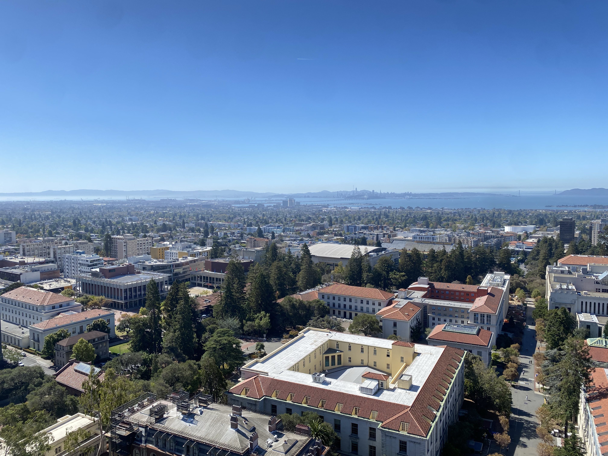
Left View

Center View
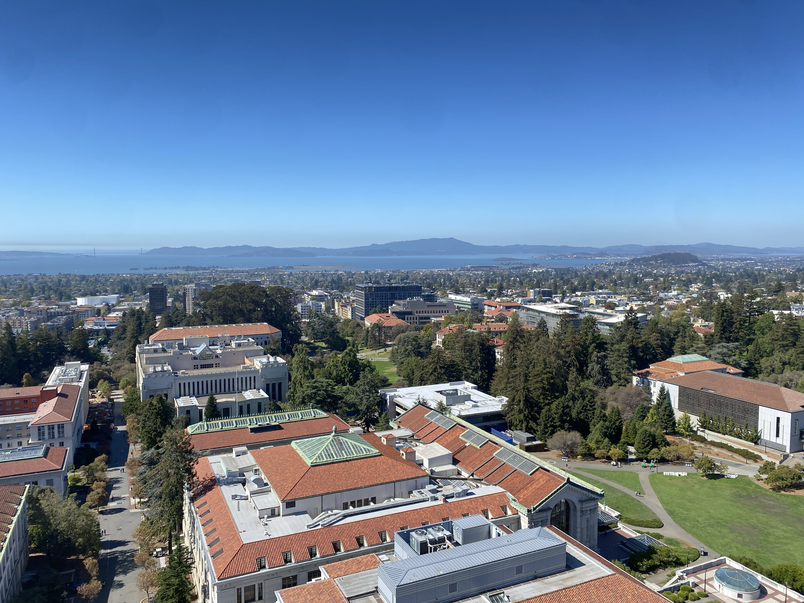
Right View
Image Set 2: Field Scene

Left View
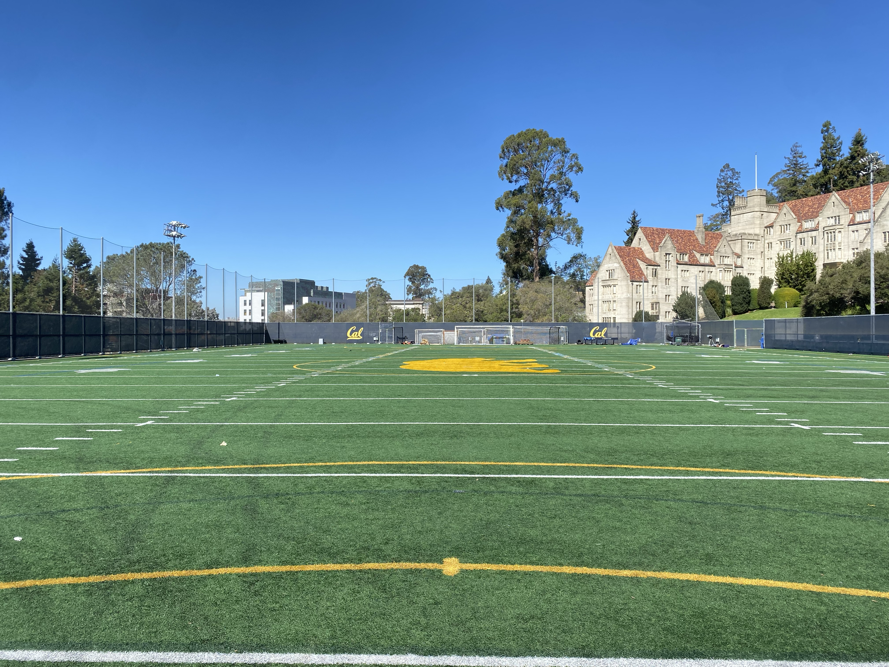
Center View
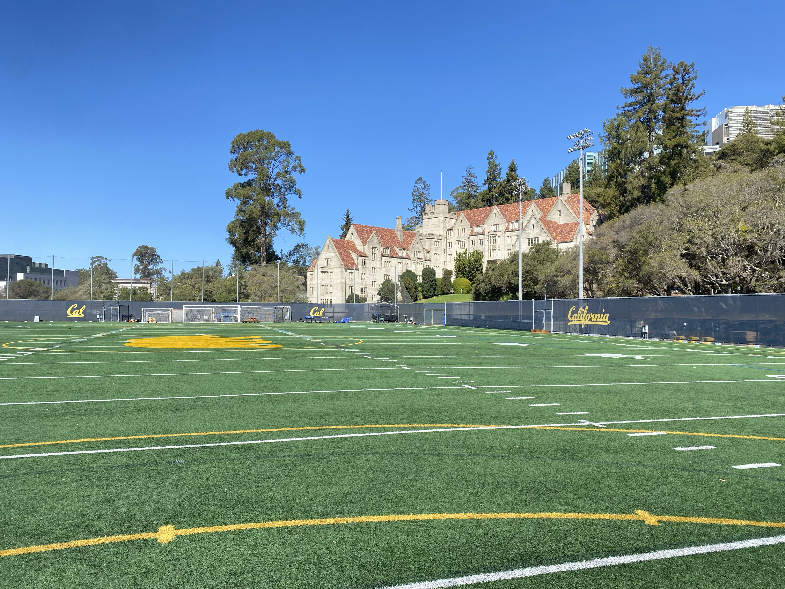
Right View
Image Set 3: Street Scene
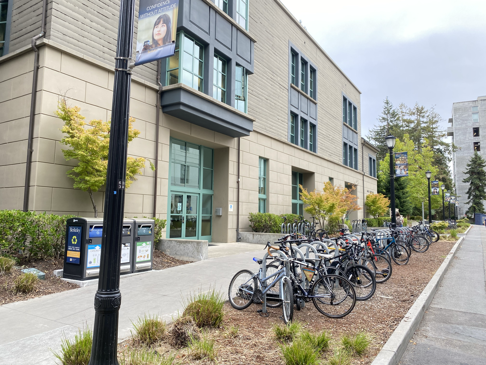
Left View
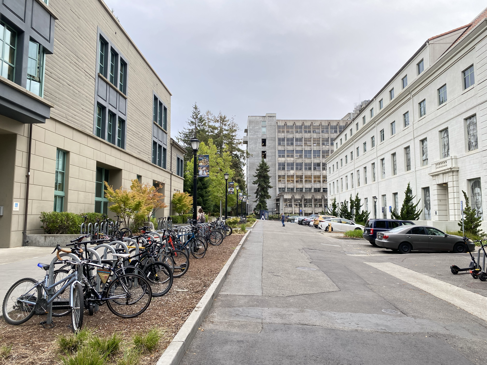
Center View

Right View
Shooting notes: All images were captured by rotating the camera around a fixed point while maintaining consistent exposure settings. The overlapping regions (approximately 50-60%) provide sufficient corresponding features for robust homography estimation.
Part A.2: Recover Homographies
I implemented a linear Direct Linear Transform (DLT) solver to recover homographies from point correspondences. Given n pairs of corresponding points (p, p') where p'=Hp, the homography H is a 3×3 matrix with 8 degrees of freedom.
Implementation: computeH(im1_pts, im2_pts)
For each correspondence (x,y) → (u,v), I construct two equations:
[x, y, 1, 0, 0, 0, -ux, -uy] · h = u
[0, 0, 0, x, y, 1, -vx, -vy] · h = v
This creates an overdetermined system Ah=b that I solve using least-squares (np.linalg.lstsq).
Example: System Ah=b
For 8 point correspondences, the system has:
- A matrix: Shape (16, 8) - 16 equations, 8 unknowns
- b vector: Shape (16,) - target coordinates
First 4 rows of A:
[[ 234. 156. 1. 0. 0. 0. -56862. -37908.]
[ 0. 0. 0. 234. 156. 1. -36270. -24180.]
[ 1891. 169. 1. 0. 0. 0. -456537. -40797.]
[ 0. 0. 0. 1891. 169. 1. -31878. -2847.]]
First 4 elements of b:
[243. 155. 241. 17.]
Recovered Homography Matrix
Example homography for tower left→center mapping:
H = [[ 4.69407910e-01 1.35965694e-02 1.79537341e+03]
[-1.68889564e-01 8.81477342e-01 1.14580741e+02]
[-1.40185683e-04 1.77714988e-05 1.00000000e+00]]
Point Correspondence Visualization: I used matplotlib's ginput to interactively select corresponding points between image pairs, with visual feedback showing selected points and their indices.
Part A.3: Warp the Images & Rectification
I implemented inverse warping with two interpolation methods from scratch: nearest neighbor and bilinear interpolation. Both methods map output pixels back to source coordinates to avoid holes.
Implementation Details
Inverse Warping Process:
- Compute output canvas size by projecting source corners through H
- For each output pixel (x_out, y_out), compute source coordinates: (x_src, y_src) = H⁻¹ · (x_out, y_out, 1)
- Sample source image using interpolation
- Track valid pixels with alpha mask
Nearest Neighbor: Round (x_src, y_src) to nearest integer and copy pixel value directly.
Bilinear Interpolation: Compute weighted average of four neighboring pixels using bilinear weights:
I = (1-wx)(1-wy)·I₀₀ + wx(1-wy)·I₁₀ + (1-wx)wy·I₀₁ + wx·wy·I₁₁
Rectification Examples
I applied rectification to correct perspective distortion by selecting 4 corners of planar surfaces and mapping them to canonical rectangles. This demonstrates that the homography and warping implementations are working correctly.
Rectification Example 1: 600×400 Output
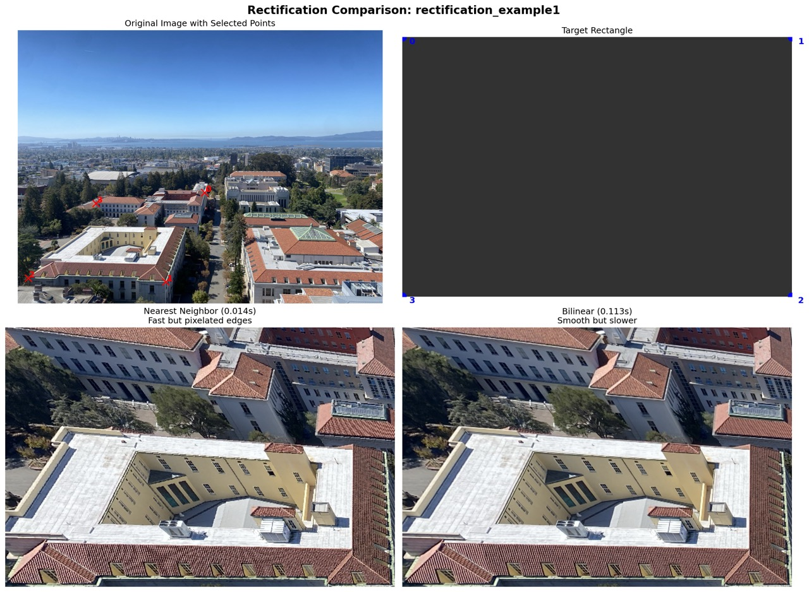
Comparison showing original image with selected points, target rectangle, nearest neighbor result, and bilinear result
Rectification Example 2: 800×600 Output
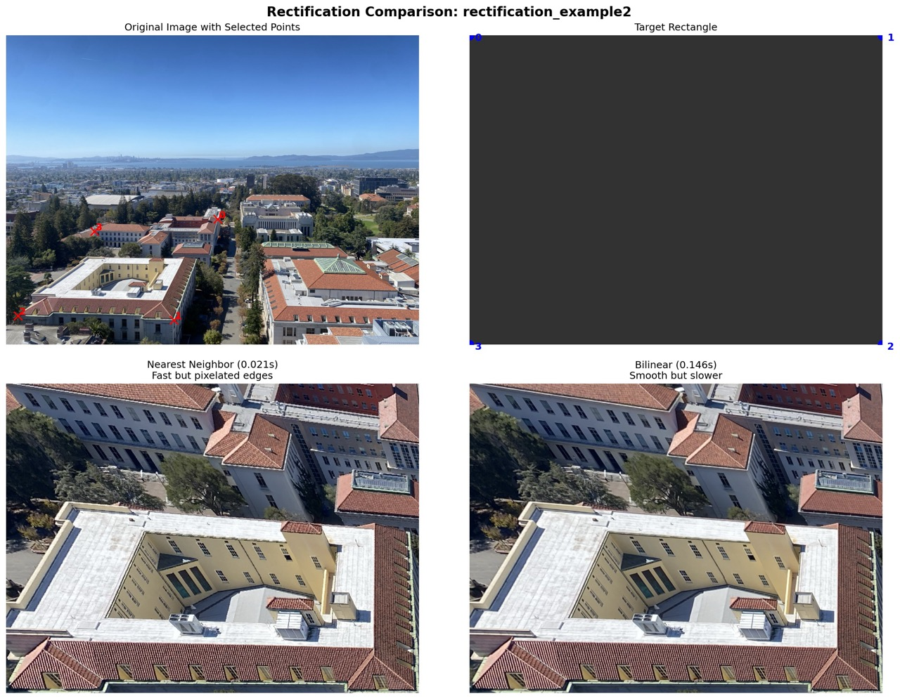
Same surface rectified at higher resolution
Quality & Performance Comparison

Nearest Neighbor (600×400)

Bilinear (600×400)
| Method | Quality | Speed | Use Case |
|---|---|---|---|
| Nearest Neighbor | Fast but pixelated edges, visible aliasing | ~2-3x faster | Preview, real-time applications |
| Bilinear | Smooth, high-quality, reduced artifacts | Slower due to 4-neighbor weighting | Final output, quality-critical applications |
Observation: Bilinear interpolation produces significantly smoother results with fewer jagged edges, especially visible on text and straight lines. The speed difference becomes more pronounced with larger output sizes (800×600 vs 600×400).
Part A.4: Blend the Images into Mosaics
I created three panoramic mosaics by warping images into alignment and blending them using distance transform feathering. This approach creates seamless transitions in overlapping regions by weighting each pixel based on its distance from the image boundary.
Blending Procedure
Method: Distance Transform Feathering
- Unified Canvas: Compute bounding box that fits all three warped images by projecting corners through homographies
- Warp Images: Apply H_left→center and H_right→center transformations using inverse warping with bilinear interpolation
- Distance Transform: For each image, compute distance from each pixel to nearest boundary using cv2.distanceTransform
- Weight Computation: Apply power function (power=2) for gradual falloff: w = distance²
- Normalized Blending: Blend pixels using normalized weights: I_final = (I_left·w_left + I_center·w_center + I_right·w_right) / (w_left + w_center + w_right)
Key Insight: Distance transform weighting gives full weight (1.0) to interior pixels and reduces weight near boundaries, creating smooth transitions in overlap regions without ghosting or hard edges.
Mosaic 1: Tower Panorama

Three-image panorama of tower scene with seamless blending
Mosaic 2: Field Panorama
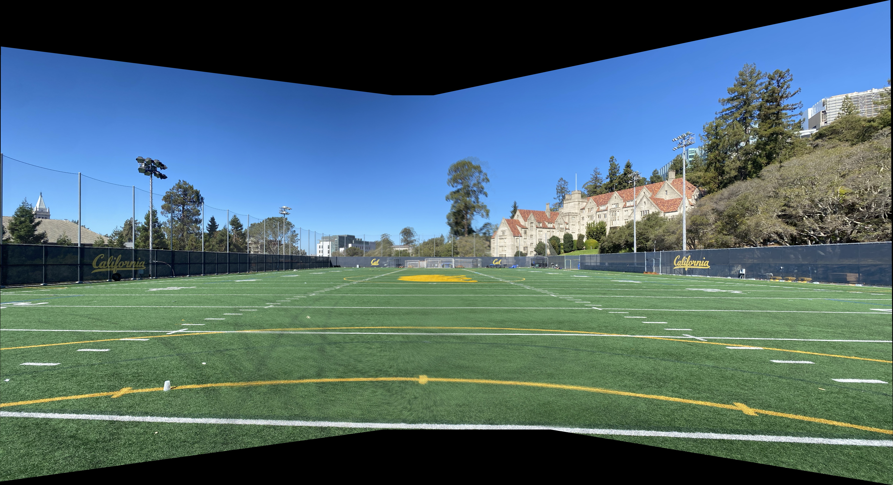
Three-image panorama of field scene
Mosaic 3: Street Panorama

Three-image panorama of street scene
Blending Analysis & Visualizations
To better understand the blending process, I created weight visualizations showing how each image contributes to the final panorama.
Weight Analysis (Field Scene)
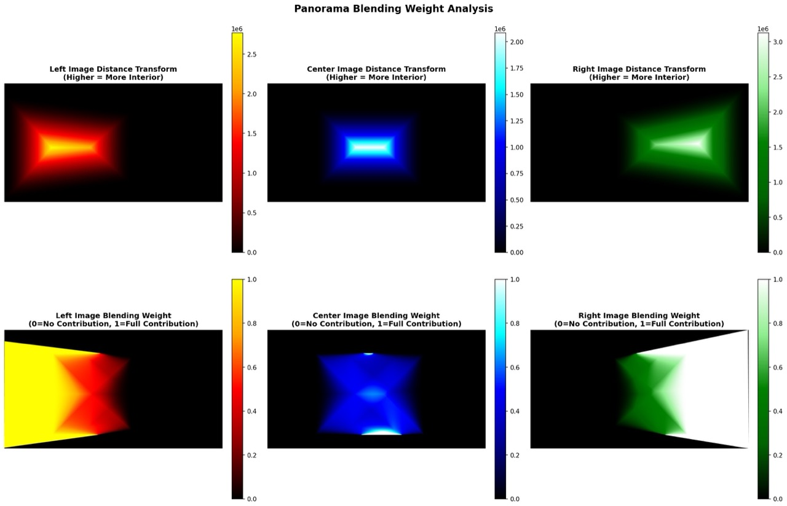
Top row: Distance transforms (higher = more interior). Bottom row: Normalized blending weights (0=no contribution, 1=full contribution)
RGB Combined Weight Map

Color visualization: Red=Left image dominant, Green=Center image dominant, Blue=Right image dominant, White=Equal blending
Alpha Masks
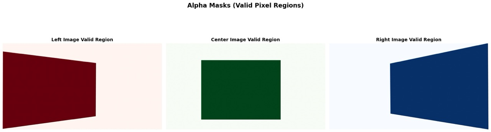
Valid pixel regions for each warped image
Individual Warped Images (Tower Scene)
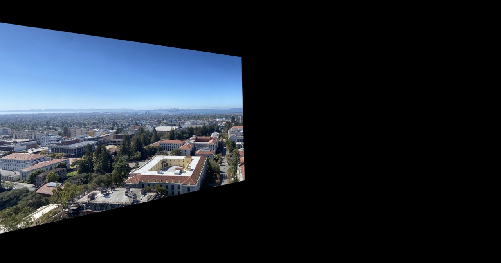
Left Warped

Center (Reference)

Right Warped
Blending Quality Assessment
Advantages of Distance Transform Feathering:
- Smooth transitions: Gradual weight falloff eliminates hard edges
- No ghosting: Normalized weights ensure proper color mixing
- Handles complex overlaps: Works naturally with three-way overlaps
- Computationally efficient: Single distance transform per image
Observations: The panoramas show seamless blending in overlap regions with no visible seams or ghosting artifacts. The distance transform method automatically handles varying overlap sizes and creates natural-looking transitions.
Implementation Notes
Functions Implemented from Scratch
computeH(im1_pts, im2_pts)- Linear DLT homography solverwarpImageNearestNeighbor(im, H)- Inverse warping with NN interpolationwarpImageBilinear(im, H)- Inverse warping with bilinear interpolationrectify_image(img, src_pts, out_w, out_h, method)- Perspective rectificationthree_image_panorama_blend(...)- Distance transform feathering for 3 imagescreate_weight_visualizations(...)- Analysis and visualization tools
Prohibited Functions NOT Used
As required, I did NOT use:
cv2.findHomographycv2.warpPerspectivecv2.getPerspectiveTransformskimage.transform.ProjectiveTransformskimage.transform.warpscipy.interpolate.griddataor similar interpolation functions
Allowed Helper Functions Used
np.linalg.lstsq- Least-squares solver for overdetermined systemsnp.linalg.inv- Matrix inversion for H⁻¹cv2.distanceTransform- Distance transform for feathering weightsmatplotlib.pyplot.ginput- Interactive point selection
Key Implementation Techniques
- Vectorization: Used numpy broadcasting for efficient pixel-wise operations
- Inverse Mapping: Avoided holes by sampling from source using output coordinates
- Alpha Masks: Tracked valid pixels to handle boundaries correctly
- Canvas Computation: Projected corners to determine output size before warping
- Power Weighting: Applied power=2 to distance transform for smoother falloff
What I Learned
This project provided hands-on experience with the mathematical foundations of image alignment and panorama creation:
- Homographies are powerful: A simple 3×3 matrix can represent complex perspective transformations
- Inverse warping is essential: Forward warping creates holes; inverse warping samples from source cleanly
- Interpolation matters: The quality difference between nearest neighbor and bilinear is dramatic
- Blending is an art: Distance transform feathering creates natural-looking seams better than hard cuts
- Point selection is critical: Even small errors in correspondences can significantly affect homography quality
- Vectorization speeds things up: NumPy broadcasting makes pixel-wise operations fast enough for large images
Most interesting insight: The weight visualizations revealed how the distance transform creates smooth gradients from image centers to edges, automatically handling complex three-way overlaps without any special logic.
Coolest result: The RGB combined weight map showing the smooth transition zones between images - it's beautiful to see the mathematics of blending visualized so clearly!